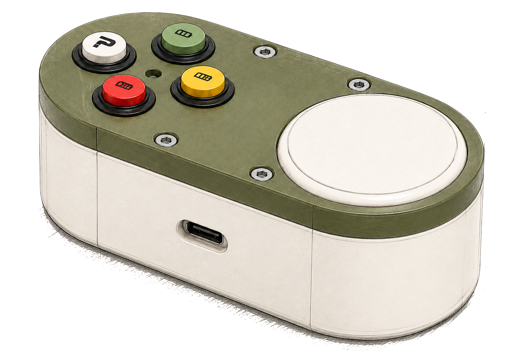
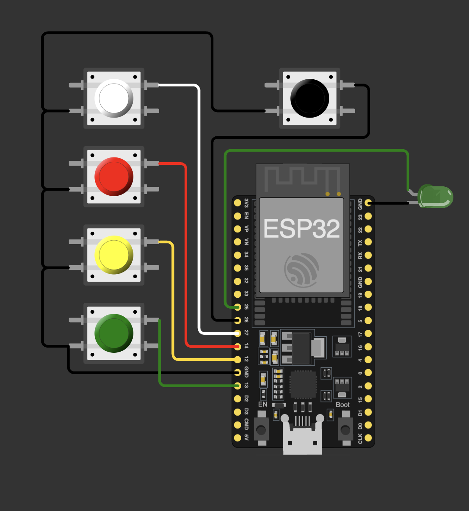
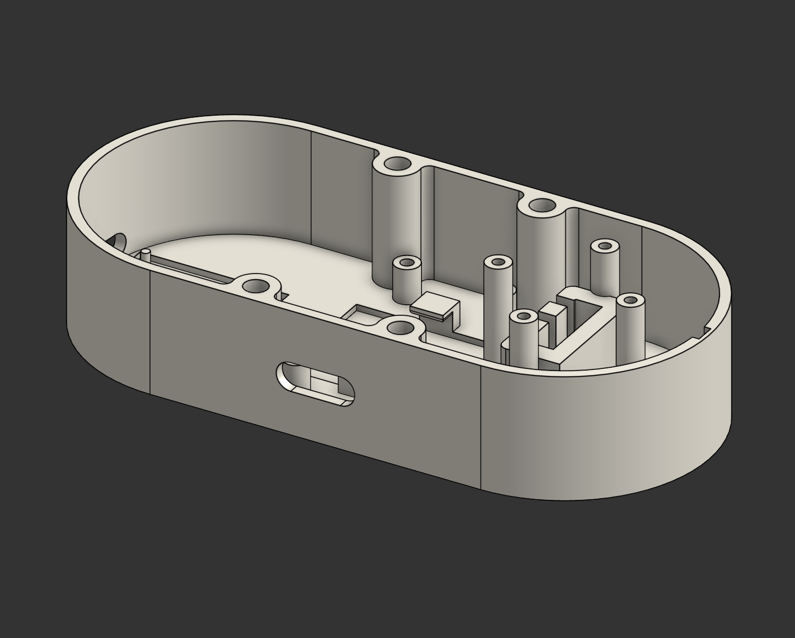
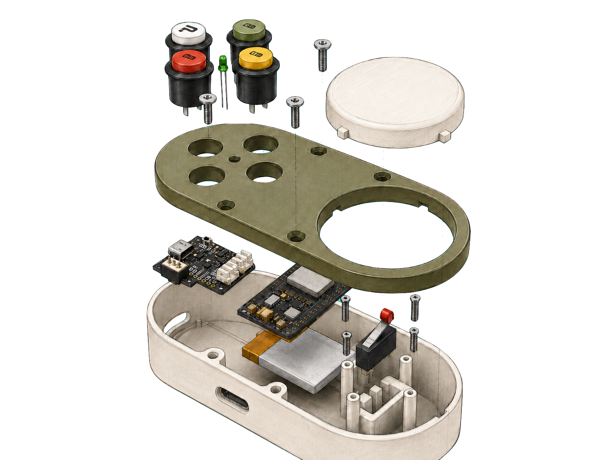
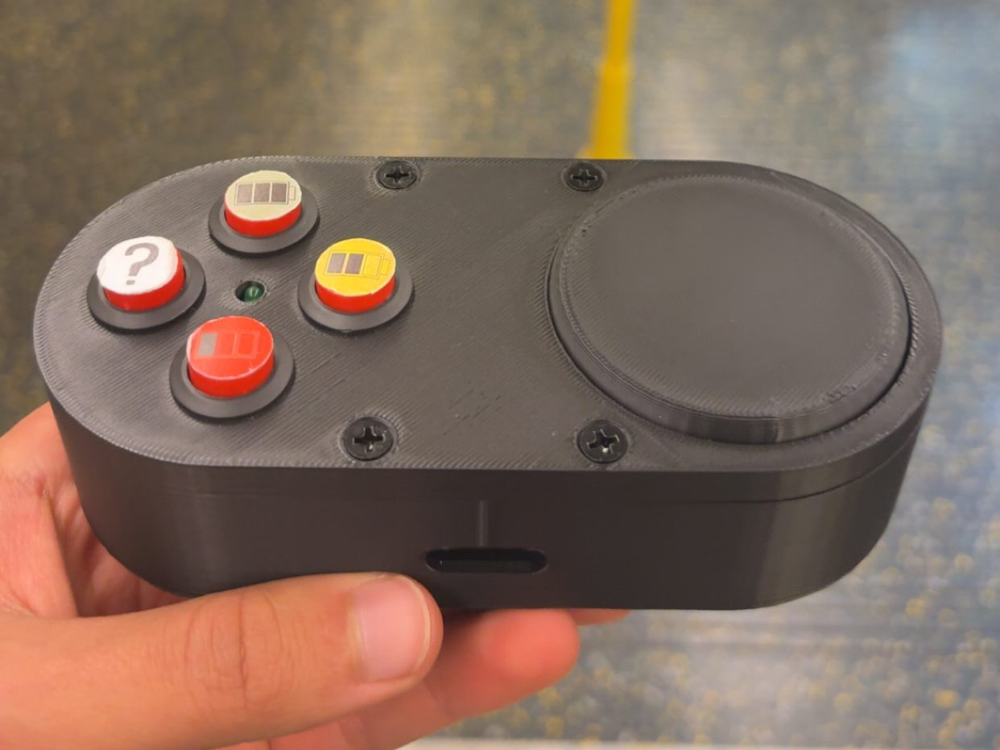
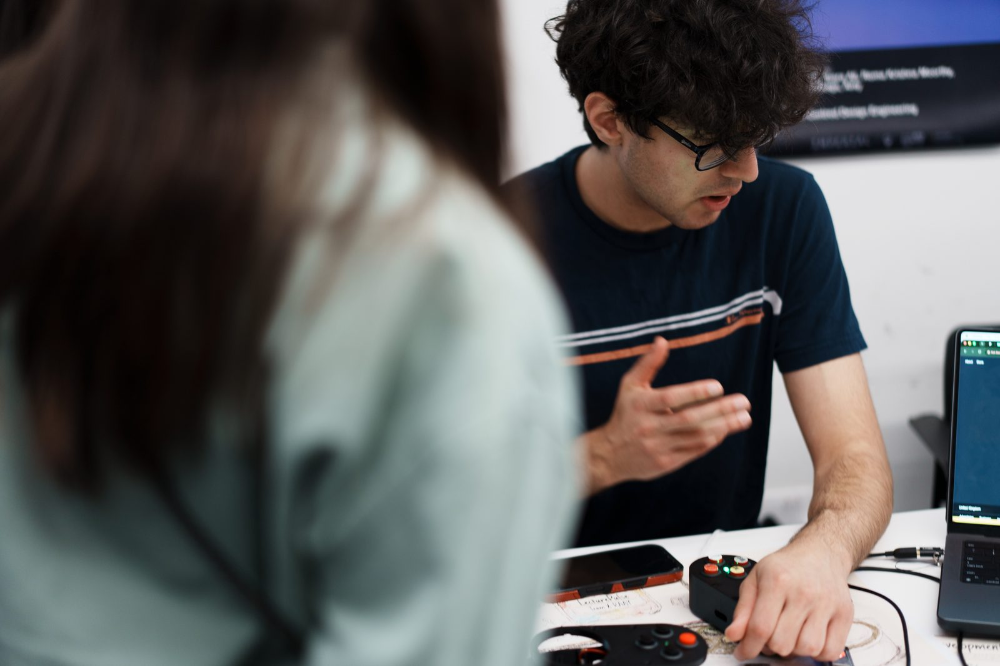
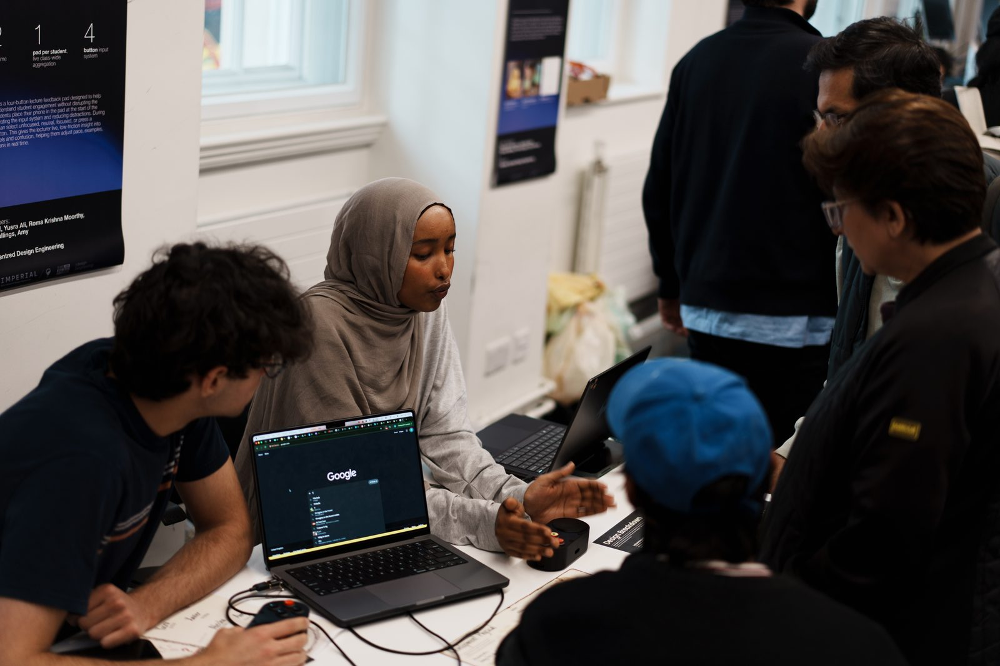
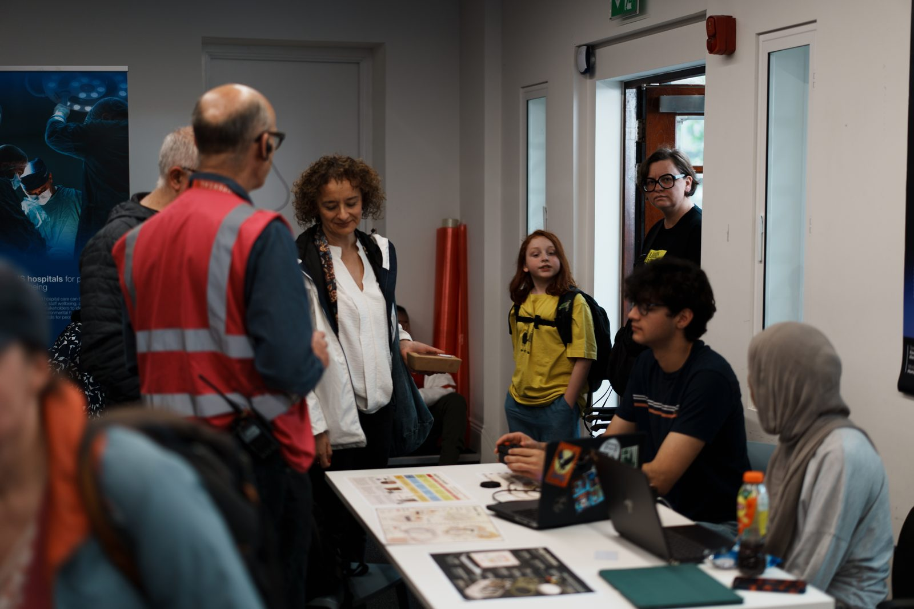

04 — Reports
The Full Story
The complete design process is documented in two reports — flip through them here. Discovery covers research, interviews and concept selection; Delivery covers prototyping, electronics, software and user testing.
A real-time lecture feedback system: a physical reaction pad that lets students signal focus level and questions live, aggregated across the room into a rolling focus score and anonymous question alerts on the lecturer's screen.
No apps, no phones out — the pad only powers on when a phone is placed into its slot, turning "put your phone away" into the on-switch.

Each pad is an ESP32 running as a Wi-Fi WebSocket client: debounced button events are sent as JSON to a local Python bridge, which maintains the room state and rebroadcasts it to a Chrome overlay on the lecturer's laptop — averaging responses into a focus score from −10 to +10, mapped onto an RGB colour scale, with question alerts raised anonymously.
Pads auto-reconnect if the link drops mid-lecture, and the system evolved through an earlier ESP-NOW mesh + USB serial hub architecture before landing on the fully wireless design.
All four inputs are momentary switches on GPIO 13 / 12 / 14 / 27 (happy, neutral, sad, question), configured INPUT_PULLUP and read active-low with software debouncing — no external resistors on the signal side. A limit switch on GPIO 26 sits under the phone slot: the pad is electrically idle until a phone physically lands in the slot, which also drives the green status LED on GPIO 25.
Power is a single 3.7 V LiPo cell through a LiPo Amigo Pro, giving protected charging and clean delivery to the ESP32's regulator, so the pad runs fully untethered through a lecture. A side USB port exposes the ESP32 for flashing and charging without opening the case.

The firmware debounces each input and emits a JSON event per press over a persistent WebSocket, retrying every 3 seconds if the link drops. The Python bridge (asyncio + websockets + pyserial) auto-detects ESP32 serial hardware by USB descriptor, holds the room state, and fans it out to any number of browser clients.
Scoring runs continuously: the room score is the mean of each active pad's latest vote (+10 / 0 / −10), passed through an exponential smoothing filter at 10 Hz so the display glides instead of jumping. A question alert fires only when 2+ pads raise it within a 10-second window — one accidental press never interrupts the lecturer.
I built the physical pad and its core electronics — the enclosure is designed around its components, not the other way round. The base shell carries dedicated bosses and trays that locate the ESP32, LiPo Amigo Pro and battery without fasteners on the components themselves, keeping mass low and assembly fast.
The two shells clamp with heat-set threaded inserts and countersunk M3 screws, leaving a completely seamless top face. A side cutout exposes the ESP32's USB port, so the pad can be flashed and charged fully assembled — and the phone slot's underside actuates the limit switch that wakes the whole system.



ADD photos/lecturepulse/finalpic.jpgPer-student ESP32 pads over Wi-Fi WebSockets, LiPo powered, phone-slot switched — as demoed at the Great Exhibition Road Festival.
Lecture Pulse was selected for Imperial's Great Exhibition Road Festival, where we demoed it live to the public. Visitors pressed the pads and watched the room's focus score move in real time on screen.
For the stand I built a dedicated ESP-NOW judging system — two wireless judge pads and a master relay ESP32 feeding the live display — so groups of visitors could vote simultaneously without any Wi-Fi setup on site.



The complete design process is documented in two reports — flip through them here. Discovery covers research, interviews and concept selection; Delivery covers prototyping, electronics, software and user testing.
Full CAD, wiring diagrams, firmware and the visual-overlay code are being assembled into an open repository alongside the reports.
View the full repository ↗